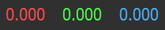

New V-Ray Frame Buffer
This page provides information on the New V-Ray Frame Buffer and its features.
Overview
The resigned V-Ray Frame Buffer (VFB) is a second generation V-Ray virtual frame buffer.
New VFB is available in 3ds Max 2018 or later. Older 3ds Max versions only support the previous V-Ray VFB .
New VFB is much more than a render image holder window. The new enhanced version provides a higher level of post processing adjustments and ability to modify your scene from inside the new VFB. Here is a list of old and new benefits you should know:
-
Image preview:
Loads render elements channels via a dropdown list;
Works with display corrections;
Loads various 8bit and 32bit file formats, including V-Ray resumable files;
Image comparison between 2 or 4 renders;
-
Image management:
Keeps the rendered image in full 32-bit floating point format;
Can store history of rendered images with their post rendering corrections;
Can save corrected output to various image formats;
-
Image editing and post processing:
Set Color Corrections to rendered image and its elements;
Composite mode for Back to Beauty workflow including layers corrections;
LightMix control on lights contribution in the rendered image;
-
Scene editing:
Can modify actual lights values by transferring updated intensity and color from LightMix mode;
IPR camera navigation and focus control from inside VFB;
-
Render management:
Denoiser control;
Region rendering control and test resolution;
Allows you to choose the order in which the buckets are rendered;
Automatic render resolution adjustment in IPR when the new VFB window is resized;
To use the VFB for rendering, turn on the Enable built-in frame buffer option in the Frame buffer rollout under the V-Ray tab in the Render Setup window.
New VFB also has some limitations which are listed in the Notes section below.
UI Path: ||V-Ray Toolbar|| > Last VFB button
||V-Ray Toolbar|| > Last VFB button
||Render Setup window|| > V-Ray tab > Frame buffer rollout > Show last VFB button

VFB Menu
The V-Ray Frame Buffer menu holds the main frame buffer commands. Some of the options are also available in the VFB toolbar for a quick access.
|
Menu |
Menu Options |
|
|
File |
Save current channel – Saves the currently loaded channel to an image file format. Note that color correction layers are not saved. Save all image channels to separate files – Saves all the render elements to separate files. Press the options( ) button to open a menu with more settings. Save all image channels to single file – Saves the image to a single multi-channel EXR or .vrimg file. Load image – Opens an image file to be previewed in the V-Ray Frame Buffer. Batch image processing – Allows processing of multiple .vrimg files with the same layer tree changes at the same time. |
Save all image channels to separate files options Save VFB color corrections to render elements – When enabled, all color corrections are saved to the render channels (as opposed to only the RGB and effectsResult channels). |
|
Batch Image Processing
Input folder – Specifies a path to start images. Output folder – Specifies a path for the output images. Layer preset – Specifies a layer tree corrections preset. Output filenames suffix – Specifies a suffix added to the output image filenames. Overwrite existing – Enables overwrite of existing files with the same name in the output folder. |
||
|
Render |
Start interactive rendering – Starts IPR. Abort rendering – Stops the current rendering. Render – Starts rendering. IPR Debug Shading – Enables the Debug shading/Isolate selected options in IPR. The submenu gives access to the following modes: Isolate Selected – Renders only the selected object(s), while the rest of the scene is rendered black. You can also select material or texture nodes to isolate all objects with the assigned shader; |
|
|
Image |
Follow mouse – Renders the closest bucket found to the mouse pointer, when using the bucket image sampler. If the progressive sampler is used, V-Ray samples the closest pixels to the mouse pointer. Follow mouse – Drag the mouse over the VFB while rendering to change what part of the image is sampled first; Copy current channel to clipboard – Copies the current channel to the clipboard. Duplicate to host frame buffer – Creates a 3ds Max virtual frame buffer copy of the current VFB. Clear image – Clears the contents of the frame buffer. This is useful when starting a new render to prevent confusion with the previous image. |
|
|
View |
Display color space – Specifies the color space, in which the image is displayed. None – Does not specify a color space; Zoom VFB – Zooms in/out the rendered image in the VFB. Zoom 50% – Zooms out to 50%; Channels – Chooses which channels to see. View red channel – Displays the red channel; Test resolution – Enables test resolution in VFB. The submenu allows choosing a percentage of the render resolution to set as the test resolution. You can choose between 10%, 25%, 50%, 75%, 110%, 125% and 150%. Note: This only affects V-Ray and does not affect the native 3ds Max test resolution setting found under 3ds Max's Render Setup dialog. Color clamping – Opens the color clamping submenu options: Force color clamping – Forces color clamping; Use pixel aspect – Enables visualization of the pixel aspect ratio. |
|
|
Options |
VFB settings – Opens the VFB Settings window where you can adjusts settings for Render View, Render Region, History and Layers. |
|

VFB Toolbar
|
|
This dropdown gives access to render elements rendered for the scene. The selected render element is displayed in the VFB. By default, the RGB color and Alpha render elements are available. Any additional render elements that have been added to the scene also appear in the drop-down. |
|
|
|
Displays the coordinates of the mouse pointer. |
|
|
|
Specifies the sampled area size. Click on the arrow to open a context menu with the available sampled area sizes: 1x1, 3x3, 5x5, and 7x7. |
|
|
|
Signifies whether color and display corrections are applied (RGB) or not (Raw) when showing the sampled pixel values at the current mouse pointer position. |
|
|
 |
Displays the RGB pixel values at the current mouse pointer position before applying any color corrections. |
|
|
|
Specifies RGB values. Click on the arrow to open a context menu with the available options. None – Does not specify the RGB value. |
|
|
|
Displays the Hue, Saturation and Value of the pixel under the current mouse position when HSV is selected. |
|
|
|
Displays the HEX of the pixel under the current mouse position when Web is selected. |
|
|
|
Displays the 8bit color palette of the pixel under the current mouse position when 8bit is selected. |
|

|
|
Locks the mouse pointer coordinates and displays information for the selected pixel. |
|
|
|
Shows corrected colors. |
|
|
|
Shows the V-Ray Log which contains messages about the render process. The V-Ray Log is also available in the Log tab. |
|
|
|
Displays the red channel. |
|
|
|
Displays the green channel. |
|
|
|
Displays the blue channel. |
|
|
|
Displays the Alpha channel. |
|
|
|
Saves the image to disk. Press and hold the icon to bring up the submenu: Save current channel – Saves the current channel to an image file format; |
|
|
|
Clears the contents of the frame buffer. This is useful when starting a new render to prevent confusion with the previous image. |
|
|
|
Renders the closest bucket found to the mouse pointer, when using the bucket image sampler. If the progressive sampler is used, V-Ray samples the closest pixels to the mouse pointer. With this option enabled, you can right-click on the image and select Lock bucket starting point to lock the bucket (or sampling) starting point. |
|
|
|
Enables/disables test resolution in the VFB. Press and hold to bring up the submenu to select the percentage of the render resolution to set as the test resolution. Note: This only affects V-Ray and does not affect the native 3ds Max test resolution setting found under 3ds Max's Render Setup dialog.
|
|
|
|
Allows you to render regions in the VFB. See the Render Region section for more information. |
|
|
|
Enables the Debug shading/Isolate selected options in IPR. Press and hold to choose between the different modes: Isolate Selected – Renders only the selected object(s), while the rest of the scene is rendered black. You can also select material or texture nodes to isolate all objects with the assigned shader; |
|
|
|
Starts IPR. If there is more than one camera in the scene, hold left mouse button to display a list of the available cameras. |
|
|
|
Stops the current rendering. |
|
|
|
Starts rendering. If there is more than one camera in the scene, hold left mouse button to display a list of the available cameras. When pressing Shift + this button, starts Render last and the last rendered viewport/camera is rendered. |
|
|
|
Pauses interactive rendering when using V-Ray GPU. |
|
|
|
Refreshes interactive rendering. |
|
Render History
The V-Ray VFB keeps a history of previously rendered images, and lists each with a number, thumbnail, and textual details in the Render history panel. Up to four images can be called from the history to be compared in the VFB (as shown below). History files are stored as .vrimg files in a user-specified folder. Render history settings can be configured in the VFB Settings window.
|
|
Enables or disables image A/B vertical comparison. Select images A and B from the render history. |
|
|
Enables or disables image A/B horizontal comparison. Select images A and B from the render history. |
|
|
Enables or disables image A/B/C/D comparison. Select images A, B, C and D from the render history. |
|
|
Saves the current image from the VFB to the render history. The image is placed at the top of the render history list. |
|
|
Loads the selected image from the render history to the VFB. |
|
|
Removes the selected image from the render history. |
|
|
A search field where you can filter the images based on the scene paths and notes. The filter text is selected when pressing the Enter from the keyboard. |
The keyboard keys from 1 to 9 can be used to quickly load the first 9 images from the history to the VFB.
The History panel with notes/name, resolution/time, and shortcut key info displayed. Right-clicking on an image in the VFB history brings up a pop-up menu with some useful options.
Image Info window
Edit note – Allows you to add a text comment to the image; the comment appears below the image.
Set A – Sets the render as A image for A/B comparison.
Set B – Sets the render as B image for A/B comparison.
Load to VFB – Loads the selected image in the VFB (same as double-clicking on the image).
Delete – Deletes the selected image from history. The image is moved to the system's Recycle Bin and can be restored from there if needed.
Load layers – Loads the layer tree preset of the selected image.
Load V-Ray settings – Loads the V-Ray settings used for the saved render.
Compare V-Ray settings – Opens the Compare V-Ray settings dialogue, where you can compare the render settings of saved renders.
Image Info – Opens a window containing detailed information about the image, including, but not limited to Camera, Aperture, FOV, Target Distance, V-Ray version, render time, and also custom attributes specified in the exr metadata of VRayOptionRE render element. Have in mind that the camera values are saved in system units. Also, the vrayrevison info displayed in the list is not related to the saved .vrimg file but to the current V-Ray build installed for 3ds Max.
Open scene – Opens the rendered scene in the viewport. This option works as long as the initial file path of the scene has not changed after the render.
Copy scene path – Copies the full path to the scene.
Copy project path – Copies the full path to the project.
Show in folder – Opens a file explorer with the respective image selected.
Reload history – Re-reads the history image list. This may be needed if the history folder is updated outside of 3ds Max (e.g. from another 3ds Max session).
Manually saved .vrimg files can also be added to the History folder, but they need to be saved with all image channels in one .vrimg file to keep the complete image info.
If you want to keep the layers that come with the Max scene, turn the Auto Load Layers option off from VFB > Options > History tab. If you want to load layers from an external image, enable the Auto Load Layers option and check how you save those images.
Layers
The redesigned V-Ray Frame Buffer includes a suite of color corrections and tools for adjusting the image. The tools are added as layers and displayed in a layer tree. You can enable or disable a particular tool using the visibility icon ( ) to the left of its name. The icon indicates that a layer is disabled.
Layers are only saved to .exr and .vrimg files written through V-Ray's own output. Note that the output in Render Setup > Common tab is written by 3ds Max so .exr files saved from there do not have Layers saved.
When saving layers to an exr/vrimg file, V-Ray writes a flag indicating whether the color corrections are baked in the RGB channel. For example, if you save an exr from the VFB File menu > Save all image channels to single file option, V-Ray creates an .exr file with corrections baked in. It also saves the layers as metadata and the flag that corrections are baked in. When loading images into the Frame Buffer, V-Ray checks if the image has corrections baked (using the flag), and if such are found, the layers are not loaded (from History panel > Load layers option or VFB File menu > Load image option) because this causes double correction.
For more information on using the Layers, see the Layers page.
|
|
Creates a layer. Multiple layers of the same type can be added. Folder – Allows grouping multiple layers; For more information, see the Layers page. |
|
|
Deletes the selected layer(s). |
|
|
Saves a layer tree preset. |
|
|
Loads a layer tree preset. |
|
|
Quick access to custom layer presets. You must set the path to it in the VFB Settings. |
|
|
Undo various actions related to layers such as create, delete, reorder or modify a layer. |
|
|
Redo various actions related to layers such as create, delete, reorder or modify a layer. |
Each layer has a context menu. Right-click to display it:

|
Command |
Description |
|
Reset |
Resets all changes done to the selected layer. |
|
Save |
Saves the layer as a preset. |
|
Load |
Loads a preset for the selected layer. |
|
Delete |
Deletes the selected layer. |
|
Save as LUT |
Bakes all the color corrections to a LUT file. |
|
New Layer |
Creates a new layer. |
|
Duplicate |
Duplicates the selected layer. |
|
Blend Modes |
Specifies how the selected layer blends with the result from all layers below it. |
Stats
The V-Ray Frame Buffer allows monitoring of different statistics and information about your scene in the Stats panel. The exact contents of the Stats changes depending on the scene, the rendering mode (interactive vs production, bucket vs progressive) and others.
Right-click to display a context menu, allowing you to copy the Stats values.
Log
The Log panel provides messages about the render process. Verbosity control is available and you can filter the type of messages shown in the Log: All, Error Only, Error & Warnings, or Error, Warnings & info. Additional options are available when you click on the Open options  button:
button:
Show progress – Shows a completion percent of each task (e.g. building Light Cache).
Wrap – Wraps longer lines in order to avoid horizontal scroll.
Undock – Docks/undocks the Log tab.
Note that the V-Ray Log is also accessible via the Show log button.
The Log tab can be detached and used as a separate window or docked elsewhere.
Ctr+F opens a search field at the bottom of the Log tab.
VFB Shortcuts
These shortcuts navigate through the VFB image. Please note that the VFB window must have the current focus for the shortcuts to have effect:
|
Mouse |
Description |
|
Mouse wheel |
Zoom in/Zoom out |
|
Double-click left button |
Zoom to 100% |
|
Middle button dragging |
Pan (hand tool) |
|
Ctrl+Shift+Left click |
Zoom in the rendered image |
|
Ctrl+Shift+Right click |
Zoom out the rendered image |
|
|
|
|
Keyboard |
Description |
|
Global |
|
|
H |
Show/hide history |
|
P |
Show/hide only layers tree |
|
Ctrl+L |
Show/hide whole right panel |
|
F11 |
Toggle full screen |
|
S |
Show/hide VFB settings |
|
History/Render View |
|
|
E |
Enable history A/B/C/D compare mode |
|
Q |
Enable history A/B horizontal compare mode |
|
W |
Enable history A/B vertical compare mode |
|
N |
Edit a note in VFB History panel |
|
1-9 |
Load the respective image from the new VFB history |
|
Layers/Property Panel |
|
|
Ctrl+Y |
Redo various actions related to layers such as create, delete, reorder or modify a layer. |
|
Ctrl+Z |
Undo various actions related to layers such as create, delete, reorder or modify a layer. |
|
Layers |
|
|
Del |
Delete layer |
|
Message Log |
|
|
Esc |
Close search |
|
Ctrl+F |
Activate the Search field in Log tab |
|
Return |
Find next |
|
Shift+Return |
Find previous |
|
Render View |
|
|
Esc |
Abort render |
|
Ctrl+C |
Copy the VFB image to the Windows clipboard; the image is copied exactly as it appears on the screen (meaning sRGB/LUT/OCIO etc. corrections are applied). The full resolution image is copied to the clipboard, even if the VFB view is zoomed in/out. |
|
Ctrl+O |
Load image |
|
L |
Lock the mouse pointer coordinates and display information for the selected pixel, i.e. activate the Lock pixel info coordinates button. |
|
Arrow keys |
Pan image left, up, right, down |
|
A |
Switch to Alpha channel |
|
B |
View Blue channel |
|
G |
View Green channel |
|
R |
View Red channel |
|
Page Down |
View next channel |
|
Page Up |
View previous channel |
|
* |
Zoom to 100% |
|
+ / = |
Zoom in |
|
-/_ |
Zoom out |
|
F |
Fit region or whole image in the VFB |
Please, note that when the Enable shortcuts option (VFB > Options > Shortcuts tab) is disabled, all 3ds Max shortcuts are expected to have effect, even if the VFB window is in focus.
VFB Shortcuts are customizable in the VFB > Options > Shortcuts tab.
VFB IPR Options
Real Zoom – When enabled, scrolling does not zoom the pixels of the rendered image, but instead moves closer or further from the rendered geometry.
View Navigation – Requires a camera view. Adjusts the view angle from the render in the VFB instead of in the viewport. Simply click and drag in the rendering area of the VFB window.
Pause – Pause/resume rendering when rendering with V-Ray GPU.
Re-initialize – Restart rendering.
Select object (Ctr+Click) – Directly select scene objects by clicking on them in the VFB rendering area. You can use the Ctrl + left mouse button keyboard shortcut instead.
Get object material (Shift+Click) – Pick a scene material from an object that is being rendered. You only need to click on that object in the VFB rendering area and the material editor opens with it. You can use the Shift + left mouse button keyboard shortcut instead.
Set focus distance (Alt+Click) – Sets the target distance for the Depth of Field effect to the location clicked in the VFB rendering area. You can use the Alt + left mouse button keyboard shortcut instead.
Note that the keyboard shortcuts work only within the VFB window.
The Undo shortcut (Ctrl+Z) affects the layers when new VFB has focus.
Render Region
Region rendering can be used in both IPR and Production modes to isolate only part of the frame for rendering. Usually, when a render region is used, you would like to save the whole frame instead of the region only.
Saving single channel .exr files ignores the render region and always saves the full frame. This applies when saving the .exr from: VFB > Render Setup > Common tab > Common Parameters > Render Output and Render Setup > V-Ray tab > Frame buffer > Separate render channels. (V-Ray ignores 3ds Max's Image Region option residing in the 3ds Max native file output dialog under Setup > OpenEXR Configuration window.)
Saving multi-channel .exr files writes just the render region data in the file by default but it can be set to save full frame instead. If the file output is saved through Render Setup > V-Ray tab > Frame buffer > V-Ray raw image file, in order to save the render region with the rest of the frame, add VRayOptionRE render element and set its exr data window option to Whole Image. Saving multi-channel .exr files from VFB > Save all channels to single file saves the render region when it is enabled from the VFB. This happens even if you have selected a render region on top of the already rendered frame, without an actual region used in the rendering process. To save the full frame from VFB, disable the render region.
Notes
-
New VFB does not display the G-Buffer layers (like Coverage etc.)
-
New VFB does not work with strip rendering
-
New VFB does not work with rendering to fields
-
Even when the V-Ray VFB is enabled, the 3ds Max VFB is still created and thus takes additional memory. To reduce that memory, uncheck the Get resolution from Max option, set the 3ds Мax resolution to a low value like 100 x 100, and then select your actual output resolution in the V-Ray tab > Frame buffer options in the Render Setup window.
-
If you have selected an output image file from the Common tab of the Render Scene dialog, V-Ray fills out the 3ds Max RFW, and this is saved as your image. If you want to save the V-Ray VFB instead, you should use the Split render channels or Render to V-Ray raw image file option of the V-Ray tab > Frame buffer options in the Render Setup window.
-
The OpenEXR file format is an open file format for high dynamic range images originally developed by Industrial Light and Magic. The official site of the OpenEXR file format is http://www.openexr.com/
-
When using the IPR right-click options, the primary 3ds Max window needs the cursor focus to use Ctrl+Z to Undo.
-
If Lens Effects or the VRayDenoiser render element are enabled, then the RGB Color channel is saved with the name RGB_color and the effectsResult channel is saved as effectsResult when saving all channels from VFB.
-
If an 8-bit file is saved through the VFB or the Render Output / Save image settings, the color space (for example sRGB) is embedded and the image appears as in the frame buffer when loaded in an external image viewer. If a 32-bit (exr, hdr, tif) image is saved, it remains linear and relies on the external image viewer to handle the display color space.
-
The VFB test resolution is ignored for command-line rendering and Backburner jobs. The Test Resolution button is inactive in IPR if Fit resolution to VFB is enabled.